Ujaval Gandhi
Ujaval GandhiOsnovno filtriranje i stilizovanje pomoću izraza (QGIS3)¶
Doprinos: Stiven Kim
Izrazi nude moćan način za manipulaciju vrednostima atributa, geometrijama i promenljivim kako bi se dinamički menjale karakteristike mape u hodu. Ovaj tutorijal je uvod u neke uobičajene izraze i kako se koriste u izradi mapa.
Pregled zadatka¶
Koristićemo izraze za filtriranje karakteristika po atributu iz sloja zemlje Natural Earth, a zatim ćemo ih stilizovati da bismo kreirali mapu Jugoistočne Azije gde je svaka zemlja stilizovana u nijansi zelene.
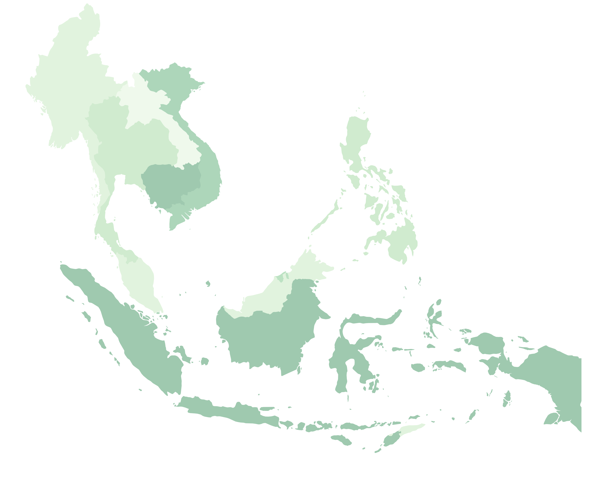
Dobijte podatke¶
Natural Earth ima administratorske shapefiles za zemlje. Na stranici za preuzimanje potražite opciju Cultural pod
Medium scale data.
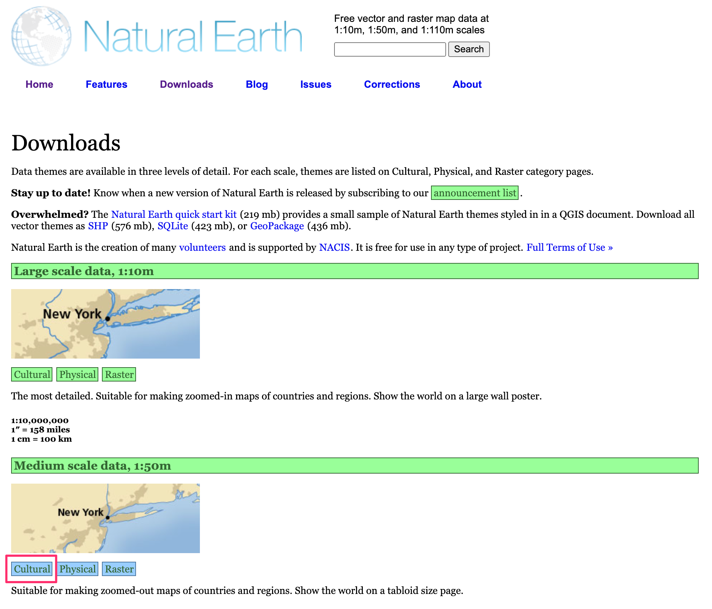
Preuzmite shapefile
Admin 0 - Countries. Videćete preuzetu datotekune_50m_admin_0_countries.zipkoja se koristi za ovaj tutorijal.
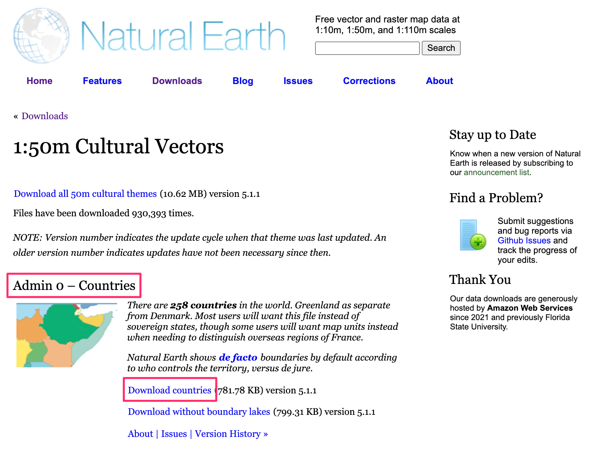
Radi lakšeg snalaženja, možete direktno preuzeti kopiju gornjeg sloja odozdo:
Izvor podataka [NATURALEARTH]
Procedura¶
Pronađite datoteku
Natural_Earth_quick_start.zipu QGIS pregledaču i proširite je. Izaberite datotekune_50m_admin_0_countries.shpi prevucite je na platno.
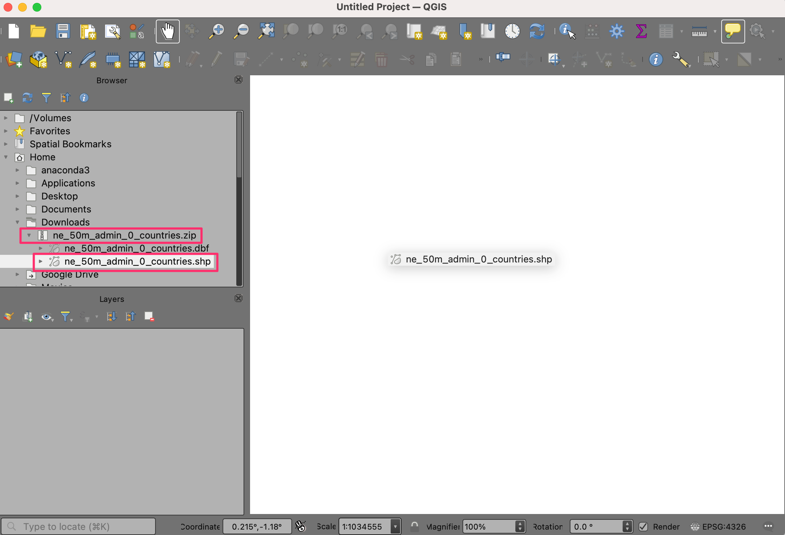
Novi sloj
ne_50m_admin_0_countriesće sada biti učitan u QGIS i trebalo bi da vidite mapu sveta. Kliknite na Otvori panel za stilizovanje slojeva.
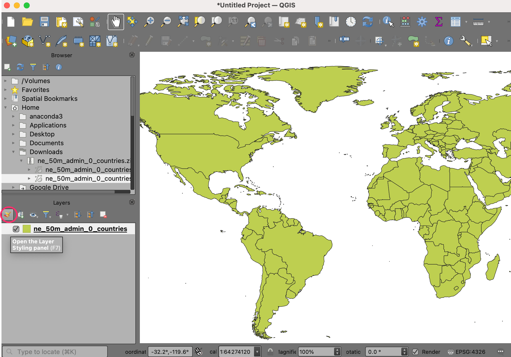
Pređi sa Jedan simbol na Zasnovano na pravilima.
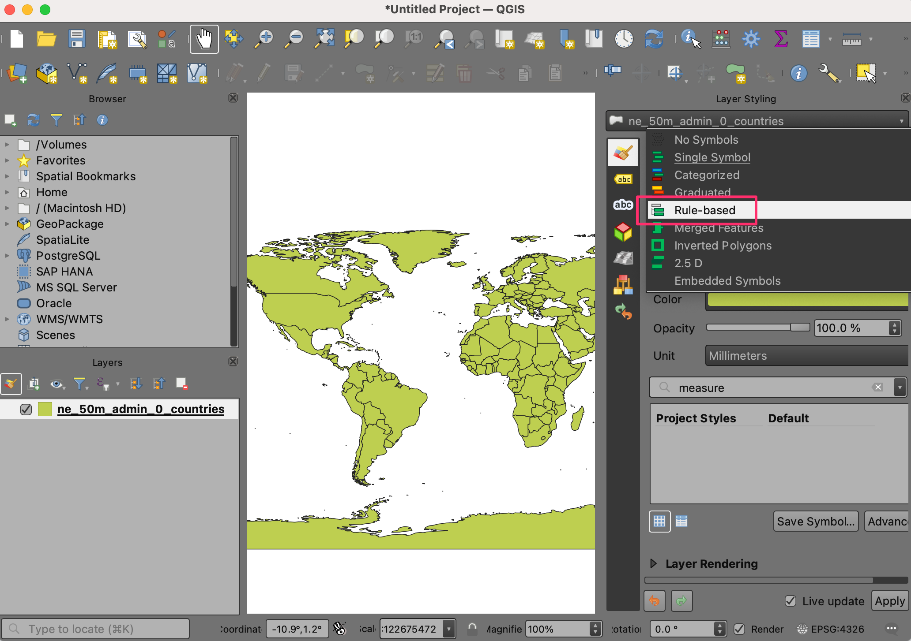
Dvaput kliknite na podrazumevano pravilo da biste ušli u dijalog Izmeni pravilo.

Da biste filtrirali pomoću izraza, kliknite na Filter e.
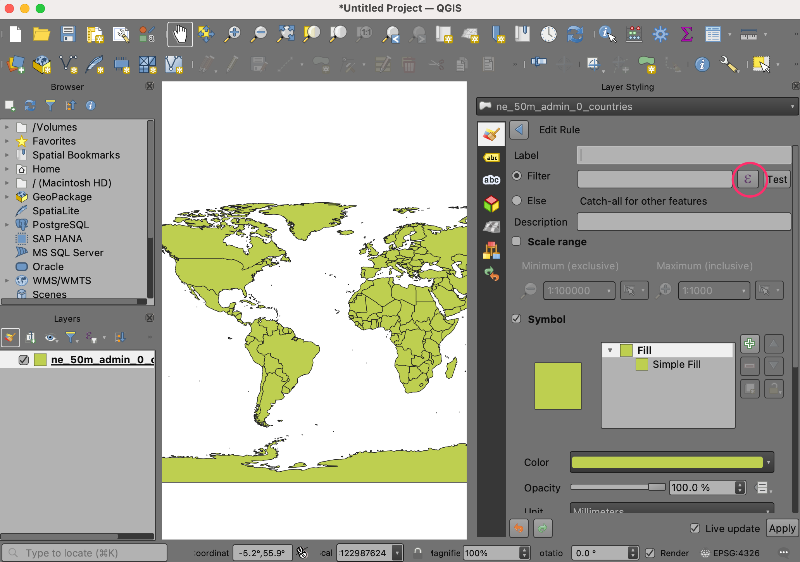
Ušli ste u Kreator izraza. Ovaj dijalog pruža glavni interfejs za pisanje izraza i može mu se pristupiti na više načina. Sadrži polje za unos sa leve strane, listu funkcija u sredini i polje za pomoć sa desne strane.
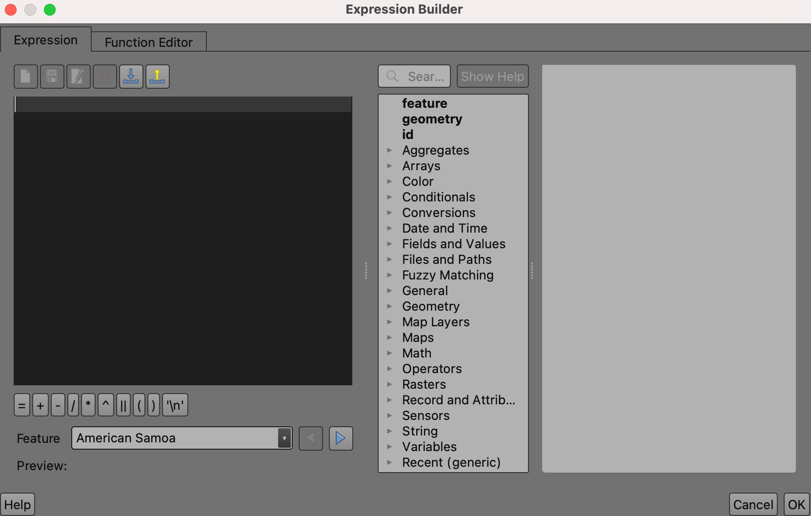
Sa liste u sredini, proširite da biste istražili polja koja se nalaze u sloju
ne_50m_admin_0_countries.
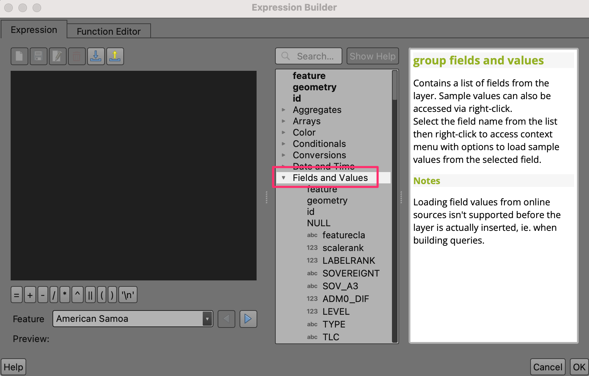
Kliknite da biste izabrali polje „PODREGION“ i kliknite na Sve jedinstvene na desnoj tabli da biste videli sve jedinstvene vrednosti podregiona.

Nakon istraživanja, izaberite polje Izraz sa leve strane da biste uneli izraz na sledeći način i kliknite na U redu.
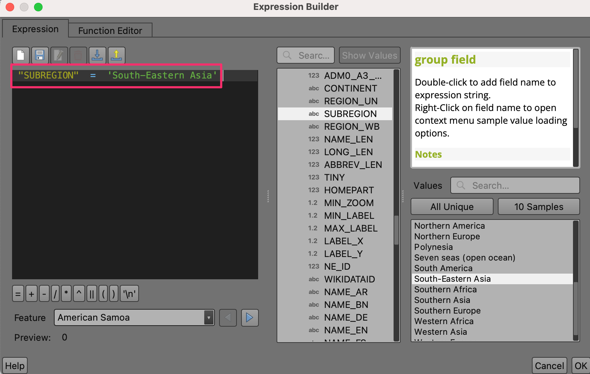"SUBREGION" = 'South-Eastern Asia'
Trebalo bi da vidite jugoistočnu Aziju. Pomerite se i zumirajte do centra regiona u prozoru mape.
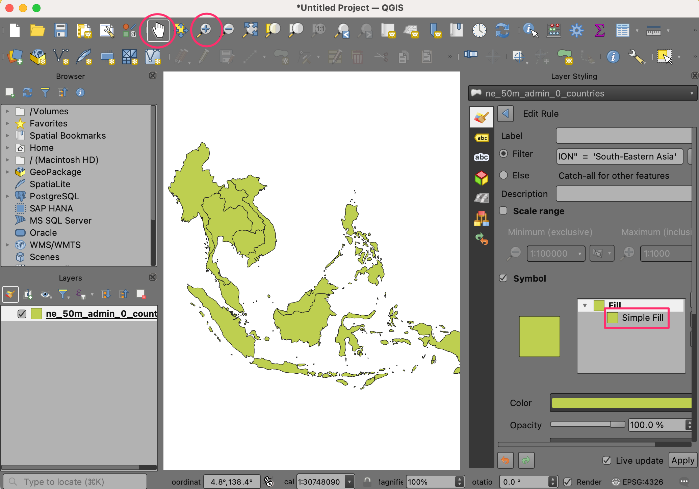
Sada kada smo koristili izraz za filtriranje obeležja, hajde da upotrebimo izraz za bojenje svake zemlje na osnovu polja
MAPCOLOR7. Pomerite se nadole do opcija Simbol u panelu za stilizovanje i izaberite Jednostavno popunjavanje da biste prikazali opcije stilizovanja kao što su boja popunjavanja, boja linije i još mnogo toga. Kliknite na dugme Prekoračivanje definisanja podataka za Boja popunjavanja i izaberite Uredi… u meniju.
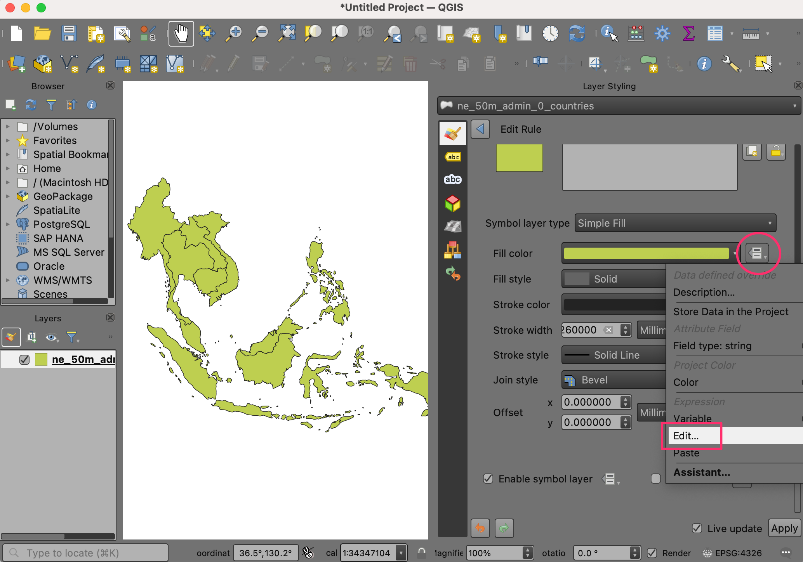
Ovo otvara dijalog Kreator izraza za boju popunjavanja. Unesite sledeći izraz:
set_color_part(ramp_color('Greens',scale_linear("MAPCOLOR7",1,7,0.2,1)),'alpha',100)
Ovaj izraz sadrži više funkcija: set_color_part() za podešavanje alfe ili transparentnosti, ramp_color() za primenu rampe boja i scale_linear() za korišćenje polja MAPCOLOR7 pri podešavanju boje za svaku zemlju. U ovom primeru, koristimo zelene boje, postavljamo alfu na 100 od 255 i skaliramo MAPCOLOR7 sa originalnog opsega od 1-7 na 0,2-1, što će lepo izgledati sa ramp_color.

Белешка
Sloj podataka „Prirodna Zemlja“ ima nekoliko polja pod nazivom MAPCOLOR7, MAPCOLOR8 itd. Ova polja sadrže numeričke vrednosti koje se koriste za bojenje mape tako da susedni poligoni nisu iste boje. Postoje verzije sa 7, 8, 9 ili 13 boja.
Kliknite na OK da biste izašli iz dijaloga. U dijalogu Edit Rule, promenite Stroke Style na . Sada bi trebalo da vidite zemlje zelenom bojom. Kliknite na Apply.
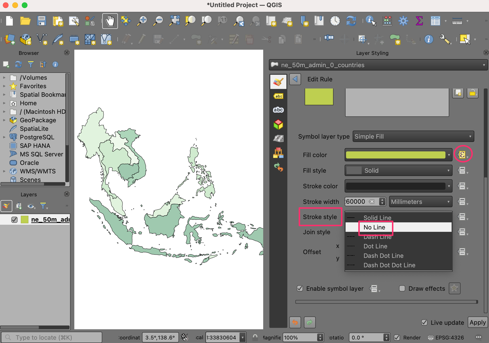
Napravili smo prelepo stilizovanu mapu filtriranjem i primenom raspona boja na sloj podataka samo korišćenjem izraza.
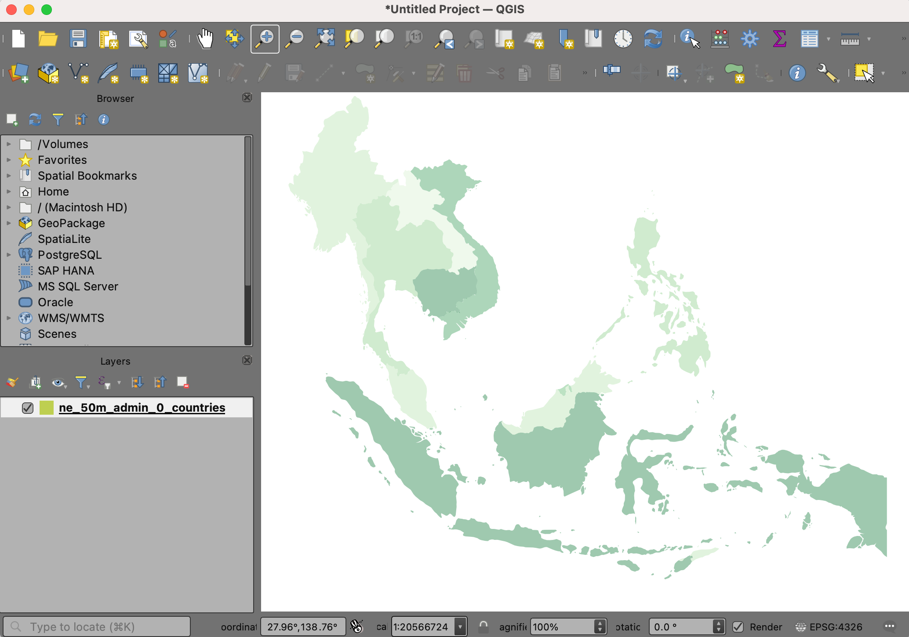
If you want to give feedback or share your experience with this tutorial, please comment below. (requires GitHub account)